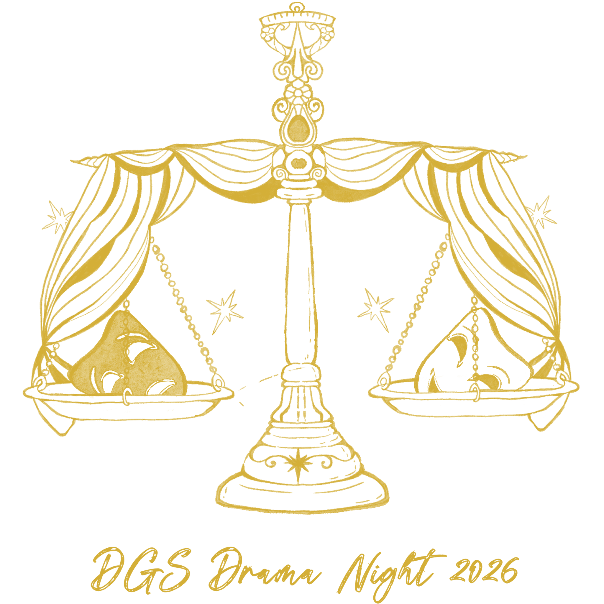

RADIO DRAMA SHOWCASE
普通話組
真假千金之覺醒後聯手炸系統
寧為心中之玉覺醒，不為虛假之名苟同。
在冰冷的實驗場，真假千金被強制投入競爭。但一首童謠、一張照片、一塊玉牌，讓她們發現血脈中相連的紅線。當抹去的記憶被拼湊，真相浮現——她們的一切，都在他人操控之中。
若大道被掩蓋，你會任由他人掌控，在不公中苟活，還是奪回追求心中之美的權利？
而她們，又將作出怎樣的選擇？
廣東話組
面具
無盡循環的封閉空間裡，面具成為人人必備的束縛，冰冷監控屏映照著虛妄的平等秩序。主角在重複的死亡與掙扎中執著前行，觸及空間深處的秘密房間。當自我與另一個守護者相遇，關於差異、救贖與束縛的真相逐漸翻涌，所謂的保護，終將在直面真實的時刻迎來終結。
Musical
When Glass Is Stained With Colour
Somewhere along the coast of a quaint country, magic pills that can even out talents have been granted to a town’s council. As people discuss whether it is ethical, these mutterings soon reach the ears of a class of students. Christine, a young girl who believes she has nothing to offer to society, welcomes this change, but as a glassblower takes her on a musical journey together with her newfound friends Elle and Sophie, they find that perhaps there are sparks of talent waiting to be discovered in them after all—Will they find a harmonising cadence to the dissonance?
English 1
A Trial in Stone
In this retelling of a traditional Greco-Roman myth, the Gorgon Medusa’s tale does not end in death. Instead, driven by a hunger to right the wrongs done against her, she refuses to enter into the Underworld, upsetting the very balance of the cosmos in the process. Now, faced with the undeniable plea of equity, the gods—or one particular god—must defend her honour in the divine court. Will the scales of equity finally balance out, and the results of this trial be set in stone?
English 2
Same Sky, Different Wings
Emma believes in one rule: the same clock for everyone. Outraged when her disabled classmate, Sophia, is granted extra time, Emma’s rigid world is shattered by a mystical transformation. Now a slow-moving turtle while Sophia soars as a hawk, Emma is trapped in a world where "equal" rules are a death sentence. To survive the treacherous forest, she must face a gut-wrenching truth: is fairness about the speed of the race, or the height of the hurdle?